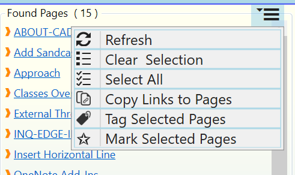

Working with the Search Result

When links in the Found Pages panel (1) are tapped or clicked, _OneNote_navigates to the corresponding page.
Clicked links automatically get selected (indicated by a green checkmark (3). You can hold the CTRL-key to select multiple links or the SHIFT-key to select a range of links.
The action (hamburger) menu (2) can be expanded to show actions, some of which operate on the selected links.

Following actions are available for links in the Found Pages (q) panel:
Clear Selection: Clears link selection
Select All: Selects all links in the Found Pages panel (1).
Copy Links to Pages: Copies all selected hyperlinks. These links can then be pasted into _OneNote_pages, or any other application that can work with hyperlinks.
Note:
- Generating links to a large number of OneNote pages can take a long time. Please wait for the progress display to disappear before attempting to paste the links.
- No links to _OneNote_pages which have been deleted but are still in the OneNote Recycle Bin are created.
Refresh: Re-runs the search and updates the search result. This action is handy when the 'Find Tagged Pages' dialog has been open for a long time and tagging operations were performed on pages or new pages were created in the meantime.
Tag Selected Pages - Open the Tag Pages dialog to change tags on the pages selected in the Found Pages list. See also: [[Tagging a Page]]
Mark Selected Pages - Add a marker tag to the pages selected in the Found Pages list.